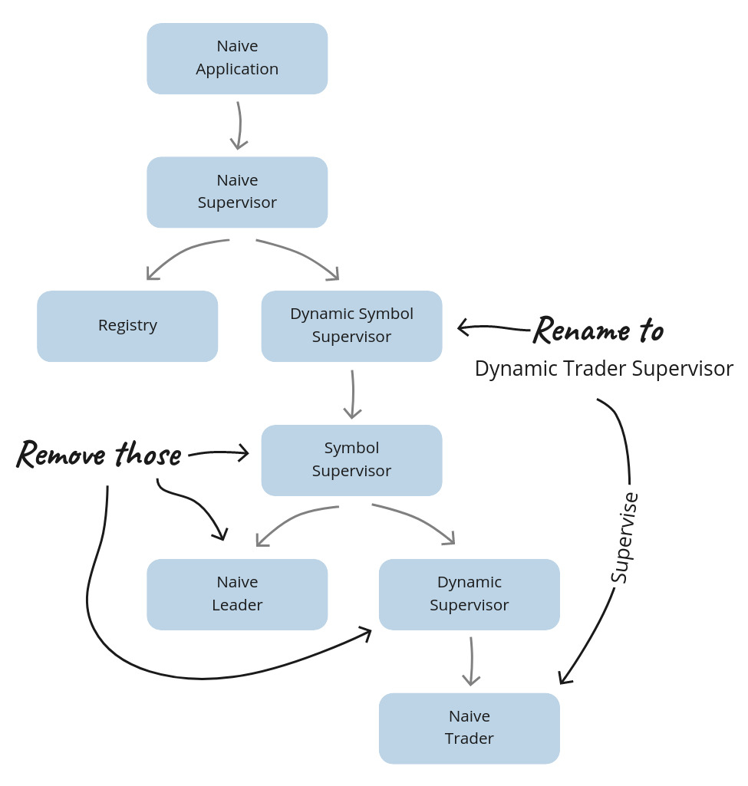

Chapter 19 Idiomatic trading strategy
In the last chapter, we proved a point with the OHLC indicator: fewer processes, more pure functions, simpler system. We went from six GenServer processes per symbol down to one and the code got better in every measurable way - fewer PubSub subscriptions, a flatter supervision tree, easier testing.
But the OHLC indicator was a clean, self-contained example. Our naive trading strategy is a different beast. Right now, every symbol spawns multiple Trader processes, each managed by a dedicated Leader, all wrapped inside a SymbolSupervisor. The Leader handles rebuys, tracks state across traders, and coordinates shutdown. It’s a lot of machinery for what is fundamentally a sequential decision-making process.
In this chapter, we’ll apply the same principles to the trading strategy itself. We’ll merge multiple trader processes into one per symbol. We’ll eliminate the Leader and SymbolSupervisor entirely. We’ll move rebuy logic and shutdown handling into the pure strategy code where they belong.
The result will be a dramatically simpler system. Not because we’re cutting corners, but because we’re putting logic where it actually makes sense - in pure functions, not in process hierarchies.
19.1 Objectives
- Following the OHLC footsteps
- Simplifying the Naive supervision tree
- Supporting multiple positions
- Retrofitting the “shutdown” functionality
- Updating the Strategy to handle rebuys
- Fetching active positions
- Tidying up
19.2 Following the OHLC footsteps
The OHLC refactoring gave us a clean, self-contained proof of concept.
Now we’ll apply the same thinking to a messier, more interconnected piece of our system.
We will update the Naive.Trader process to be responsible
for multiple trades(we will call them “positions” from now on) on a single symbol.
This way, we will have a single Naive.Trader process per symbol,
and we will get rid of both the Naive.Leader(we will move rebuy/shutdown logic to our strategy - where it belongs) and the Naive.SymbolSupervisor:

There are multiple benefits of simplifying the supervision hierarchy, and we will look at them closely as we refactor the code - let’s get to it.
19.3 Simplifying the Naive supervision tree
Starting from the top of the tree, the first module we need to update will be the Naive.DynamicSymbolSupervisor module.
19.3.1 The Naive.DynamicTraderSupervisor module
The filename needs to be updated to dynamic_trader_supervisor.ex and the module name to
Naive.DynamicTraderSupervisor.
Next, there’s the @registry attribute that we will rename to :naive_traders.
Finally, update the alias to the Naive.SymbolSupervisor to the Naive.Trader and use it inside the start_child/1 function:
19.3.2 The Naive module
The Naive module heavily depends on the Naive.DynamicSymbolSupervisor(now called the
Naive.DynamicTraderSupervisor), we need to update all the references to it:
19.3.3 The Naive.Supervisor module
The Naive.Supervisor supervises the Naive.DynamicSymbolSupervisor(now called the
Naive.DynamicTraderSupervisor) and the registry that stores the traders’ PIDs - we need to update both:
# /apps/naive/lib/naive/supervisor.ex
alias Naive.DynamicTraderSupervisor # <= updated
@registry :naive_traders # <= updated
...
children = [
{Registry, [keys: :unique, name: @registry]},
{DynamicTraderSupervisor, []}, # <= updated
{Task,
fn ->
DynamicTraderSupervisor.autostart_workers() # <= updated
end}
]19.3.4 The Naive.Trader module
The final module to be updated will be the Naive.Trader. It needs to register process’ PID inside the Registry:
# /apps/naive/lib/naive/trader.ex
@registry :naive_traders # <= added
...
def start_link(%State{} = state) do
symbol = String.upcase(state.symbol) # <= updated
GenServer.start_link(
__MODULE__,
state,
name: via_tuple(symbol) # <= updated
)
end
...
defp via_tuple(symbol) do
{:via, Registry, {@registry, symbol}}
endThat finishes the changes to the supervision tree - the Naive.Leader and the Naive.SymbolSupervisor aren’t used anymore.
At this moment, our codebase won’t work as we need to retrofit the functionality that the Naive.Leader was offering
into our Naive.Trader and Naive.Strategy modules, which we will focus on in the next section.
19.4 Supporting multiple positions
With the supervision tree simplified, we’ve got a new problem: our single Naive.Trader process needs to manage what used to be spread across many.
The current State struct inside the Naive.Trader was geared toward a single trade cycle -
it doesn’t know anything about multiple concurrent positions.
We need two things: a new State for the Naive.Trader that holds settings and a list of positions,
and a Position struct that captures what each individual trade cycle looks like.
We will start by moving the current State struct from the Naive.Trader into the Naive.Strategy and renaming it to Position:
# /apps/naive/lib/naive/strategy.ex
defmodule Naive.Strategy do
...
defmodule Position do
@enforce_keys [
# keys copied from `Naive.Trader.State` struct
]
defstruct [
# keys copied from `Naive.Trader.State` struct
]
endThis will break all the references to Naive.Trader.State inside the Naive.Strategy,
which we need to update to Position(and remove the alias of Naive.Trader.State):
# /apps/naive/lib/naive/strategy.ex
...
def execute(%TradeEvent{} = trade_event, %Position{} = position) do
generate_decision(trade_event, position)
|> execute_decision(position)
end
...
def generate_decision(
%TradeEvent{
...
},
%Position{ # <= in all 6 clauses
...
...
def generate_decision(%TradeEvent{}, _position) do
:skip
end
defp execute_decision(
{.... # decision },
%Position{ # <= updated
...
} = position # <= updated
) do
...
new_position = %{position | buy_order: order} # <= updated
@leader.notify(:trader_state_updated, new_position) # <= updated
{:ok, new_position} # <^= similar changes in all execute_decisionWe will ignore the fact that we are still calling the @leader and still dealing with a single position(inside the strategy) -
we will fix that in the following section. One step at a time ;)
As we are already changing strategy to work with positions, we will update all the logger messages:
# /apps/naive/lib/naive/strategy.ex
defp execute_decision(
{:place_buy_order, price, quantity},
...
) do
@logger.info(
"Position (#{symbol}/#{id}): " <>
"Placing a BUY order @ #{price}, quantity: #{quantity}"
) # ^ updated message
...
defp execute_decision(
{:place_sell_order, sell_price},
...
) ... do
@logger.info(
"Position (#{symbol}/#{id}): " <>
"Placing a SELL order @ #{sell_price}, quantity: #{quantity}"
) # ^ updated message
...
defp execute_decision(
:fetch_buy_order,
...
) ... do
@logger.info("Position (#{symbol}/#{id}): The BUY order is now filled")
... # ^^^ updated message
defp execute_decision(
:exit,
...
) do
@logger.info("Position (#{symbol}/#{id}): Trade cycle finished")
... # ^^^ updated message
defp execute_decision(
:fetch_sell_order,
...
) do
@logger.info("Position (#{symbol}/#{id}): The SELL order is now filled")
... # ^^^ updated message
defp execute_decision(
:rebuy,
...
) do
@logger.info("Position (#{symbol}/#{id}): Rebuy triggered")
... # ^^^ updated messageOur code is still far from working, but we are incrementally updating it to work with multiple positions.
19.4.1 Initialization
At this moment, the Naive.Trader expects the state to be injected on start (using the start_link/1 function).
We were able to do that because the Naive.Leader was fetching the settings and building the fresh trader state.
First, let’s update the State of the Naive.Trader - it will now hold the symbol’s settings(previously held in the leader)
and list of positions(list of the Naive.Strategy.Position structs):
# /apps/naive/lib/naive/trader.ex
defmodule State do
@enforce_keys [:settings, :positions]
defstruct [:settings, positions: []]
endNow we need to update the start_link/1 and init/1 functions as well as add the handle_continue/2 callback to fetch settings
and store them together with an initial position in the state:
# /apps/naive/lib/naive/trader.ex
alias Naive.Strategy
...
def start_link(symbol) do # <= now expecting symbol
symbol = String.upcase(symbol) # <= updated
GenServer.start_link(
__MODULE__,
symbol, # <= updated
name: via_tuple(symbol)
)
...
def init(symbol) do # <= updated
@logger.info("Initializing new trader for #{symbol}") # <= updated
@pubsub_client.subscribe(
Core.PubSub,
"TRADE_EVENTS:#{symbol}"
)
{:ok, nil, {:continue, {:start_position, symbol}}} # <= updated
end
def handle_continue({:start_position, symbol}, _state) do
settings = Strategy.fetch_symbol_settings(symbol)
positions = [Strategy.generate_fresh_position(settings)]
{:noreply, %State{settings: settings, positions: positions}}
end # ^^^ new function/callbackAs the Naive.Trader starts, it returns the {:continue, ...} tuple from the init/1 function.
This will cause the handle_continue/2 callback to be called asynchronously.
Inside it, we fetch settings and add a single fresh position to the list of positions - both stored in Trader’s state.
There’s a trade-off worth flagging here: by consolidating all positions into one process, we lose per-position fault isolation. If one position’s execution crashes, all positions for that symbol go down with it. The DynamicSupervisor will restart the trader, and we could recover state from the database, but it’s a different failure mode than before. We’ll revisit this trade-off in the final thoughts.
Coming Full Circle: Notice that we’re back to using handle_continue in the Trader -
the same pattern we started with in Chapter 2. But the context has evolved: back then, each Trader fetched its own tick_size.
Then in Chapter 5, we moved that responsibility to the Leader. Now, with our simplified architecture,
the Trader once again handles its own initialization -
but this time it’s fetching settings and creating positions for a much more sophisticated trading system.
Both functions inside the handle_continue/2 callback previously were part of the Naive.Leader -
we need to move them across to the Naive.Strategy:
# /apps/naive/lib/naive/strategy.ex
alias Naive.Schema.Settings
...
@repo Application.compile_env(:naive, :repo)
...
def fetch_symbol_settings(symbol) do
{:ok, exchange_info} = @binance_client.get_exchange_info()
db_settings = @repo.get_by!(Settings, symbol: symbol)
merge_filters_into_settings(exchange_info, db_settings, symbol)
end
def merge_filters_into_settings(exchange_info, db_settings, symbol) do
symbol_filters =
exchange_info
|> Map.get(:symbols)
|> Enum.find(&(&1["symbol"] == symbol))
|> Map.get("filters")
tick_size =
symbol_filters
|> Enum.find(&(&1["filterType"] == "PRICE_FILTER"))
|> Map.get("tickSize")
step_size =
symbol_filters
|> Enum.find(&(&1["filterType"] == "LOT_SIZE"))
|> Map.get("stepSize")
Map.merge(
%{
tick_size: tick_size,
step_size: step_size
},
db_settings |> Map.from_struct()
)
end
def generate_fresh_position(settings, id \\ :os.system_time(:millisecond)) do
%{
struct(Position, settings)
| id: id,
budget: D.div(settings.budget, settings.chunks),
rebuy_notified: false
}
endInside the above code, we modified the fetch_symbol_settings/1 function to fetch settings
from binance and DB first and then progress with the “pure” part.
This update allows us to test most of the logic easily without using mocks.
The generate_fresh_position/2 was previously called fresh_trader_state/1 inside the Naive.Leader.
It had an id assigned inside the function based on the current system time.
That made it a bit more difficult to test as we don’t know what we should expect there as a value.
By moving the id to the arguments and assigning the current time there, we are now able to test it by passing our dummy value.
We are now using @repo inside the Naive.Strategy so we need to add it to configuration files(including test configuration):
19.4.2 Parallelising the strategy
We can now move on to the strategy, but first, let’s update the Naive.Trader to pass positions and settings separately:
# /apps/naive/lib/naive/trader.ex
def handle_info(%TradeEvent{} = trade_event, %State{} = state) do
case Naive.Strategy.execute(trade_event, state.positions, state.settings) do # <= updated
{:ok, updated_positions} -> # <= updated
{:noreply, %{state | positions: updated_positions}} # <= updated
:exit ->
{:stop, :normal, state}
end
endWe need all the positions to iterate through them, deciding and executing appropriate actions.
The settings will be used inside the strategy later, but we will pass it on now to avoid going back and forward later.
Additionally, we updated the case match to expect a list of updated positions which we will assign to the Trader’s state.
Now we can modify the Naive.Strategy to handle multiple positions:
# /apps/naive/lib/naive/strategy.ex
def execute(%TradeEvent{} = trade_event, positions, settings) do
generate_decisions(positions, [], trade_event, settings)
|> Enum.map(fn {decision, position} ->
Task.async(fn -> execute_decision(decision, position, settings) end)
end)
|> Task.await_many()
|> then(&parse_results/1)
endWe need to write most of the functions used above, but we can already see the idea. We will map each of the decisions that we generate to async tasks that execute them. Next, we wait for all of them to finish and parse the results.
It’s worth noting that Task.async/1 links the spawned task to the caller process.
If any of the execute_decision calls crashes, the whole Naive.Trader process goes down -
which is the behavior we want here, as the Naive.DynamicSupervisor will restart it.
If we needed individual tasks to fail independently, we’d reach for Task.Supervisor.async_nolink/2 instead.
First, we are calling a new function generate_decisions/4,
which is a recursive function on top of the existing generate_decision/2:
# /apps/naive/lib/naive/strategy.ex
def generate_decisions([], generated_results, _trade_event, _settings) do
generated_results
end
def generate_decisions([position | rest] = positions, generated_results, trade_event, settings) do
current_positions = positions ++ (generated_results |> Enum.map(&elem(&1, 1)))
case generate_decision(trade_event, position, current_positions, settings) do
decision ->
generate_decisions(
rest,
[{decision, position} | generated_results],
trade_event,
settings
)
end
endWe are using case here instead of a simple variable binding because we’ll be pattern matching on specific decisions like :exit and :rebuy shortly.
At this moment, generate_decisions/4 can look like an overengineered Enum.map/2 function,
but we are actually preparing the ground for the subsequent updates later in this chapter(to get the rest of the functionality running).
The key detail is current_positions on line 3 -
it combines positions we haven’t processed yet with positions we’ve already decided on.
This gives each generate_decision/4 call visibility into the full picture,
which we’ll need when the rebuy logic checks how many positions are currently open.
It’s important to note that we are now passing four arguments into the generate_decision function -
we added current_positions and settings - those will be required in the further updates as it was mentioned above.
At this moment though, we will update all the generate_decision/2 clauses to include two additional arguments:
# /apps/naive/lib/naive/strategy.ex
def generate_decision(
%TradeEvent{...},
%Position{
...
},
_positions, # <= add this 7 times
_settings # <= add this 7 times
) doNow back to the main execute/3 function where we are calling execute_decision/3, which we need to update as well(all clauses):
# /apps/naive/lib/naive/strategy.ex
defp execute_decision(
{...},
%Position{
...
} = position,
_settings # <= added 7 times
) doThe final function that gets called from the execute/3 function is parse_results/1, which will aggregate all the results into a single tuple:
# /apps/naive/lib/naive/strategy.ex
def parse_results([_ | _] = results) do
results
|> Enum.map(fn {:ok, new_position} -> new_position end)
|> then(&{:ok, &1})
endAt this moment, we should be able to run our code for a single trade cycle.
Note that parse_results/1 only matches {:ok, _} tuples right now -
it will crash when a trade cycle completes and returns :exit. We’ll fix that shortly:
$ iex -S mix
...
iex(1)> Naive.start_trading("XRPUSDT")
...
iex(2)> Streamer.start_streaming("XRPUSDT")
21:29:17.998 [info] Starting streaming XRPUSDT trade events
...
21:29:21.037 [info] Position (XRPUSDT/1651696014179): Placing a BUY order @ 0.64010000,
quantity: 31.00000000
21:29:21.037 [error] Task #PID<0.10293.0> started from #PID<0.480.0> terminating
** (stop) exited in: GenServer.call(:"Elixir.Naive.Leader-XRPUSDT"...So we have a trader that starts and places a buy order but then it tries to update the leader with its new state -
we can update the execute_decision/3 function to drop the updates(in all of the clauses):
# /apps/naive/lib/naive/strategy.ex
defp execute_decision(
...
) do
...
# convert the below:
new_position = %{position | buy_order: order}
@leader.notify(:trader_state_updated, new_position)
{:ok, new_position}
# to:
{:ok, %{position | buy_order: order}}
endApply similar changes to all the clauses of the execute_decision/3 to get rid of the references to the @leader -
remember to remove the module’s attribute as well, as we won’t need it anymore.
Important note - one of those references to the @leader will be the notification that rebuy was triggered:
At this moment, remove that reference as well. We will get back to the rebuy functionality in the next section.
We can now rerun our code:
$ iex -S mix
...
iex(1)> Streamer.start_streaming("XRPUSDT")
...
iex(2)> Naive.start_trading("XRPUSDT")
...
21:59:19.836 [info] Position (XRPUSDT/1651697959836): Placing a BUY order @ 2945.31000000,
quantity: 0.06790000
21:59:46.940 [info] Position (XRPUSDT/1651697959836): The BUY order is now filled
21:59:46.997 [info] Position (XRPUSDT/1651697959836): Placing a SELL order @ 2947.66000000,
quantity: 0.06790000
22:00:21.631 [info] Position (XRPUSDT/1651697959836): The SELL order is now filled
22:00:21.734 [info] Position (XRPUSDT/1651697959836): Trade cycle finished
22:00:21.737 [error] GenServer {:naive_traders, "XRPUSDT"} terminating
** (FunctionClauseError) no function clause matching in anonymous fn/1 in
Naive.Strategy.parse_results/1
(naive 0.1.0) lib/naive/strategy.ex:56: anonymous fn(:exit) in
Naive.Strategy.parse_results/1We can see that our trader process can now go through the whole trade cycle,
but it fails to start a new position after the first trade cycle finishes and returns :exit.
To fix this issue, we need to return :finished instead of :exit from
the generate_decision/4 clause responsible for matching end of the trade cycle:
# /apps/naive/lib/naive/strategy.ex
def generate_decision(
%TradeEvent{},
%Position{
sell_order: %Binance.OrderResponse{
status: "FILLED"
}
},
_positions,
_settings
) do
:finished # <= updated
endThis decision will end up inside the execute_decision/3 where previously we were returning :exit atom,
which was causing an error - let’s move this clause to be the last clause and
update its body to generate a fresh state instead of returning a dummy atom:
# /apps/naive/lib/naive/strategy.ex
defp execute_decision(
:finished, # <= previously :exit; updated
%Position{
id: id,
symbol: symbol
},
settings # <= now used
) do
new_position = generate_fresh_position(settings) # <= added
@logger.info("Position (#{symbol}/#{id}): Trade cycle finished")
{:ok, new_position} # <= updated
endAt this moment, our trader process should be able to run across multiple trade cycles one after another:
$ iex -S mix
...
iex(1)> Streamer.start_streaming("XRPUSDT")
...
iex(2)> Naive.start_trading("XRPUSDT")
...
22:46:46.568 [info] Position (XRPUSDT/1651697959836): Trade cycle finished
22:46:46.577 [info] Position (XRPUSDT/1651697959836): Placing a BUY order @ 2945.31000000,
quantity: 0.06790000This finishes direct changes related to making the trader/strategy work with multiple positions,
but it lacks all the features that the Naive.Leader offered.
We will now iterate on this code to bring that missing functionality.
19.5 Retrofitting the “shutdown” functionality
Previously, the shutdown logic was scattered around in multiple places inside the Naive.Leader,
for example, when the rebuy was triggered - making sure that new Trader processes won’t get started in the “shutdown” state.
Now, we have an opportunity to make the shutdown functionality part of our strategy.
We will start by modifying the DynamicTraderSupervisor where we will update the shutdown_worker/1 function
to call the Naive.Trader instead of the Naive.Leader:
# /apps/naive/lib/naive/dynamic_trader_supervisor.ex
def shutdown_worker(symbol) when is_binary(symbol) do
Logger.info("Shutdown of trading on #{symbol} initialized")
{:ok, settings} = update_status(symbol, "shutdown")
Trader.notify(:settings_updated, settings) # <= updated
{:ok, settings}
endNow, the Trader will handle updating the settings, which we will add next, but before we do that,
we should move the update_status/2 function into the Naive.Strategy as it
will be used from both the DynamicTraderSupervisor and the Naive.Strategy:
# /apps/naive/lib/naive/strategy.ex
def update_status(symbol, status) # <= updated to public
when is_binary(symbol) and is_binary(status) do
@repo.get_by(Settings, symbol: symbol) # <= updated to use @repo
|> Ecto.Changeset.change(%{status: status})
|> @repo.update() # <= updated to use @repo
endNow we need to update the DynamicTraderSupervisor module to call the update_status/2 from the Naive.Strategy module:
# /apps/naive/lib/naive/dynamic_trader_supervisor.ex
alias Naive.Strategy
...
def start_worker(symbol) do
...
Strategy.update_status(symbol, "on") # <= updated
..
def stop_worker(symbol) do
...
Strategy.update_status(symbol, "off") # <= updated
...
def shutdown_worker(symbol) when is_binary(symbol) do
...
{:ok, settings} = Strategy.update_status(symbol, "shutdown") # <= updated19.5.1 Handling updated settings
We can now move on to the Naive.Trader module, where we need to add a new notify/2 interface function:
# /apps/naive/lib/naive/trader.ex
def notify(:settings_updated, settings) do
call_trader(settings.symbol, {:update_settings, settings})
end
...
defp call_trader(symbol, data) do
case Registry.lookup(@registry, symbol) do
[{pid, _}] ->
GenServer.call(
pid,
data
)
_ ->
Logger.warning("Unable to locate trader process assigned to #{symbol}")
{:error, :unable_to_locate_trader}
end
endThe notify/2 function acts as a part of the public interface of the Naive.Trader module.
It uses the call_trader/2 helper function to abstract away looking up the Trader process from the Registry and making a GenServer.call.
Besides the “looking up” part being an implementation detail that should be abstracted,
we will also need to look up traders’ PIDs to provide other functionalities in the upcoming sections.
As we are making a call to the trader process, we need to add a callback:
19.5.2 Updating the Naive.Strategy to honour the “shutdown” state
We updated all of the modules to update the settings inside the %State{} of the Trader process.
That’s the first step, but now we need to modify our strategy to act appropriately.
The first step will be to update the generate_decision/4 clause that handles the rebuy
being triggered to take under consideration the settings.status:
# /apps/naive/lib/naive/strategy.ex
def generate_decision(
%TradeEvent{
price: current_price
},
%Position{
buy_order: %Binance.OrderResponse{
price: buy_price
},
rebuy_interval: rebuy_interval,
rebuy_notified: false
},
_positions,
settings # <= updated
) do
if trigger_rebuy?(buy_price, current_price, rebuy_interval) &&
settings.status != "shutdown" do # <= updated
:rebuy
else
:skip
end
endAnother clause that we need to update is the one responsible for matching end of the trading cycle:
# /apps/naive/lib/naive/strategy.ex
def generate_decision(
%TradeEvent{},
%Position{
sell_order: %Binance.OrderResponse{
status: "FILLED"
}
},
_positions,
settings # <= updated
) do
if settings.status != "shutdown" do # <= updated
:finished
else
:exit # <= new decision
end
endAs we added a new :exit decision that we need to handle inside the generate_decisions/4 -
it needs to remove this decision from the list of generated decisions:
# /apps/naive/lib/naive/strategy.ex
def generate_decisions([position | rest] = positions, generated_results, trade_event, settings) do
...
case generate_decision(trade_event, position, current_positions, settings) do
:exit ->
generate_decisions(rest, generated_results, trade_event, settings)
decision -> ...
...Inside the recursive function, we are skipping all the positions that ended up with the :exit decisions.
This will slowly cause the list of positions to drain to an empty list, which will cause the parse_results/1 function
to fail(as it expects non-empty list). We will add a new first clause to match the empty list of positions and return the :exit atom:
# /apps/naive/lib/naive/strategy.ex
def parse_results([]) do # <= added clause
:exit
end
def parse_results([_ | _] = results) do
...
endIn the end, the :exit atom will cause the Naive.Trader module to stop the process.
The final step will be to update the Naive.Trader to log a message and update the status to "off" before exiting the process:
# /apps/naive/lib/naive/trader.ex
def handle_info(%TradeEvent{} = trade_event, %State{} = state) do
...
case Naive.Strategy.execute(trade_event, state.positions, state.settings) do
...
:exit ->
{:ok, _settings} = Strategy.update_status(trade_event.symbol, "off")
Logger.info("Trading for #{trade_event.symbol} stopped")
{:stop, :normal, state}We can test this by running the following:
$ iex -S mix
...
iex(1)> Streamer.start_streaming("XRPUSDT")
...
iex(4)> Naive.start_trading("XRPUSDT")
...
iex(4)> Naive.shutdown_trading("XRPUSDT")
22:35:58.929 [info] Shutdown of trading on XRPUSDT initialized
23:05:40.068 [info] Position (XRPUSDT/1651788334058): The SELL order is now filled.
23:05:40.123 [info] Trading for XRPUSDT stoppedThat finishes the shutdown functionality. As mentioned previously, one after another, positions will complete their trading cycles, and the whole process will exit at the end.
19.6 Updating the Strategy to handle rebuys
Previously, both the Trader and the Leader were involved in the rebuy functionality.
As now we removed the Leader, it’s an excellent opportunity to move as much as possible of that logic into our strategy.
We will start by updating the generate_decision/4 clause responsible for matching the rebuy scenario.
We will take into consideration the number of currently open positions(this check was previously done inside the Naive.Leader):
# /apps/naive/lib/naive/strategy.ex
def generate_decision(
%TradeEvent{
price: current_price
},
%Position{
buy_order: %Binance.OrderResponse{
price: buy_price
},
rebuy_interval: rebuy_interval,
rebuy_notified: false
},
positions, # <= updated
settings
) do
if trigger_rebuy?(buy_price, current_price, rebuy_interval) &&
settings.status != "shutdown" &&
length(positions) < settings.chunks do # <= added
:rebuy
else
:skip
end
endNow we need to deal with the :rebuy decision(previously, we removed the logic notifying the Naive.Leader about the rebuy being triggered).
In case of rebuy decision we need to add a new position to the positions list which can be done by modifying the generate_decisions/4 function:
# /apps/naive/lib/naive/strategy.ex
def generate_decisions([position | rest] = positions, generated_results, trade_event, settings) do
...
case generate_decision(trade_event, position, current_positions, settings) do
:exit -> ...
:rebuy ->
generate_decisions(
rest,
[{:skip, %{position | rebuy_notified: true}}, {:rebuy, position}] ++ generated_results,
trade_event,
settings
) # ^^^^^ added
decision -> ...In the case of the :rebuy decision, we are updating the rebuy_notified of the position that triggered it,
as well as adding another position to the list with the :rebuy decision(it’s the same position that triggered
rebuy but we will ignore it further down the line).
The final step will be to update the execute_decision/3 clause that matches the :rebuy decision to
generate_fresh_position/1, log and return that newly created position:
# /apps/naive/lib/naive/strategy.ex
defp execute_decision(
:rebuy,
%Position{
id: id,
symbol: symbol
}, # <= position removed
settings # <= updated
) do
new_position = generate_fresh_position(settings) # <= updated
@logger.info("Position (#{symbol}/#{id}): Rebuy triggered. Starting a new position") # <= updated
{:ok, new_position} # <= updated
endWe updated the whole function body as now it deals with initialising a new position instead
of just flipping the rebuy_triggered flag inside the original position.
We can now run the strategy to confirm that rebuy starts new positions:
$ iex -S mix
...
iex(1)> Streamer.start_streaming("XRPUSDT")
...
iex(2)> Naive.start_trading("XRPUSDT")
...
18:00:29.872 [info] Position (XRPUSDT/1651856406828): Rebuy triggered. Starting new position
18:00:29.880 [info] Position (XRPUSDT/1651856429871): Placing a BUY order @ 13.39510000,
quantity: 14.93000000The above shows that a single buy position can trigger rebuy, starting a new position immediately placing another buy order.
At this moment the integration tests should already be passing, but first, we need to fix the Naive.TraderTest a bit to make the test code compile:
# /apps/naive/test/naive/trader_test.exs
defp dummy_trader_state() do
%Naive.Strategy.Position{ # <= updatedThat’s just the bare minimum as this test won’t run,
but Elixir would not be able to find the :id attribute inside the State struct at the compilation time.
We can now run the integration tests:
$ MIX_ENV=integration mix test.integration
...
Finished in 7.2 seconds (0.00s async, 7.2s sync)
1 tests, 0 failures (1 excluded)Yay! We reached the point where our strategy took over all the functionality that the Naive.Leader provided.
19.7 Fetching active positions
Previously, we were able to figure out the number of currently open positions by looking at the supervision tree, but now there’s just a single trader process with possibly multiple open positions.
This is actually a win - instead of piecing together state from multiple processes, we can query it all from one place.
To aid observability, we will add an interface to fetch the currently open positions of the trader process.
We will start with the interface itself. It will take a symbol to be able to find the trader responsible for it:
# /apps/naive/lib/naive.ex
alias Naive.Trader
...
def get_positions(symbol) do
symbol
|> String.upcase()
|> Trader.get_positions()
endNow the trader’s interface function will forward the symbol via GenServer.call/2 to
the Naive.Trader process responsible for trading on that symbol:
# /apps/naive/lib/naive/trader.ex
def get_positions(symbol) do
call_trader(symbol, {:get_positions, symbol})
endAs we need to look up the PID of the trader process in the Registry,
we can use the same call_trader/2 helper as in the case of the notify/2 function.
The message will get sent to the Trader process, where we need to add a callback that will return all the current positions:
# /apps/naive/lib/naive/trader.ex
def handle_call(
{:get_positions, _symbol},
_,
state
) do
{:reply, state.positions, state}
endWe can now test fetching currently open positions by running:
$ iex -S mix
...
iex(1)> Streamer.start_streaming("XRPUSDT")
...
iex(2)> Naive.start_trading("XRPUSDT")
...
iex(3)> Naive.get_positions("XRPUSDT")
[
%Naive.Strategy.Position{
...
},
%Naive.Strategy.Position{
...
},
...
] We can see that we now have a better overview of what’s happening. Previously we needed to go to the database as the state was shared between multiple Trader processes. Now everything is in one place, which we could leverage to load the initial state for some frontend dashboards(subsequent positions’ updates could be done by listening to the PubSub topic and pushing diffs to the browser via WebSocket).
19.8 Tidying up
Let’s tidy up the codebase. Start by removing /apps/naive/lib/naive/leader.ex
and /apps/naive/lib/naive/symbol_supervisor.ex as we don’t need them anymore.
This will cause problems with our mocks that we need to update in the test helper:
# /apps/naive/test/test_helper.exs
Mox.defmock(Test.Naive.LeaderMock, for: Naive.Leader) # <= removeOur integration test will now run again and pass. Sadly that won’t be the case for our unit tests. We will revisit the mocking and unit tests in the next chapter, where we will once again look into how we should structure our code to be more testable and “mockable”.
19.9 Final thoughts
We’ve just collapsed an entire layer of our supervision hierarchy. Here’s what we accomplished:
- Merged multiple Trader processes per symbol into a single process handling all positions
- Eliminated the Leader process entirely, moving rebuy and shutdown logic into the pure strategy
- Removed the SymbolSupervisor - no longer needed without multiple processes to coordinate
- Added the
get_positions/1interface for observability into the trader’s current state - Kept side-effectful code at the edges while the core decision-making stayed pure
The refactoring pattern we followed is worth calling out explicitly:
- Move state from multiple processes into a single process(positions list)
- Move coordination logic(rebuys, shutdown) from a manager process(Leader) into pure functions(Strategy)
- Parallelise execution of decisions using
Task.asyncwhere it makes sense, not where the architecture forces it
It’s worth noting what we traded away:
- Individual trader fault isolation - if one position’s execution crashes, it takes down all positions for that symbol. But the DynamicSupervisor will restart the trader, and the positions were ephemeral anyway
- The Leader as a coordination point - but the coordination was artificial complexity caused by having multiple processes in the first place
- Parallel trade cycles per symbol - but they were never truly parallel; they all depended on the same price stream
The biggest win isn’t in the code we wrote - it’s in the code we deleted. The Leader module, the SymbolSupervisor, the inter-process notification system - all gone. And with them went an entire category of bugs: race conditions between the Leader and Traders, orphaned processes after partial failures, state synchronization issues.
This pattern of “consolidate, then simplify” shows up across well-designed Elixir systems. A common mistake in OTP design is creating process hierarchies that mirror code organization rather than concurrency needs. Our refactoring is a concrete example of correcting exactly that mistake.
So, What’s Next?
Our strategy is cleaner, but we’ve been sweeping a testing problem under the rug.
We removed the @leader attribute, we dropped the Mox-based mocks,
and our unit tests need rethinking. In the next chapter, we’ll look at how to properly test code that lives
at the boundary between pure logic and side effects. We’ll introduce layers of abstraction and
explore alternatives to Mox that don’t force us into premature behaviour definitions.
[Note] Please remember to run mix format to keep things nice and tidy.
The source code for this chapter can be found in the book’s source code repository (branch: chapter_19).